01 — PROBLEM
도시 열섬 현상으로 폭염과 열대야는 길어지고, 지면 가까이 걷는 반려견은 사람보다 훨씬 뜨거운 공기 속에 놓입니다. 땀으로 열을 식히기도 어렵습니다.
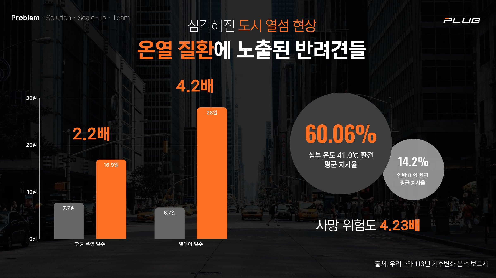
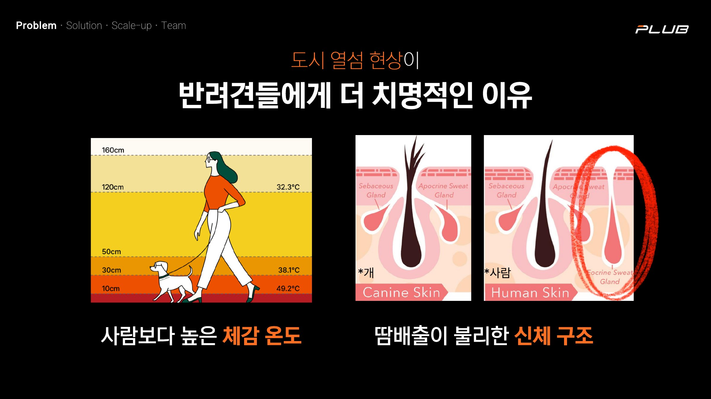
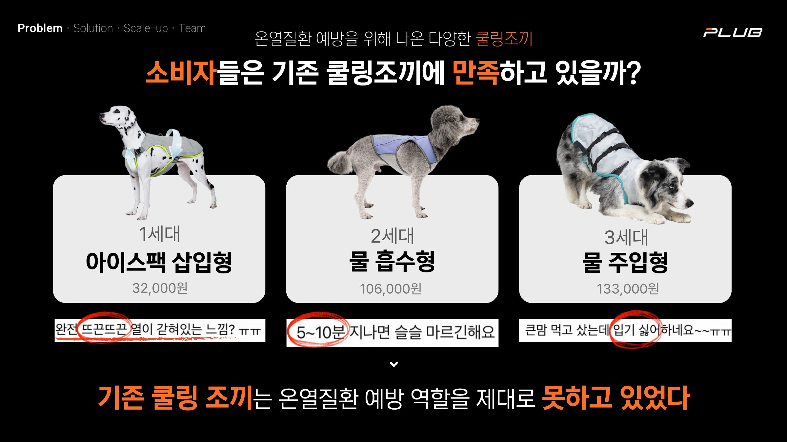
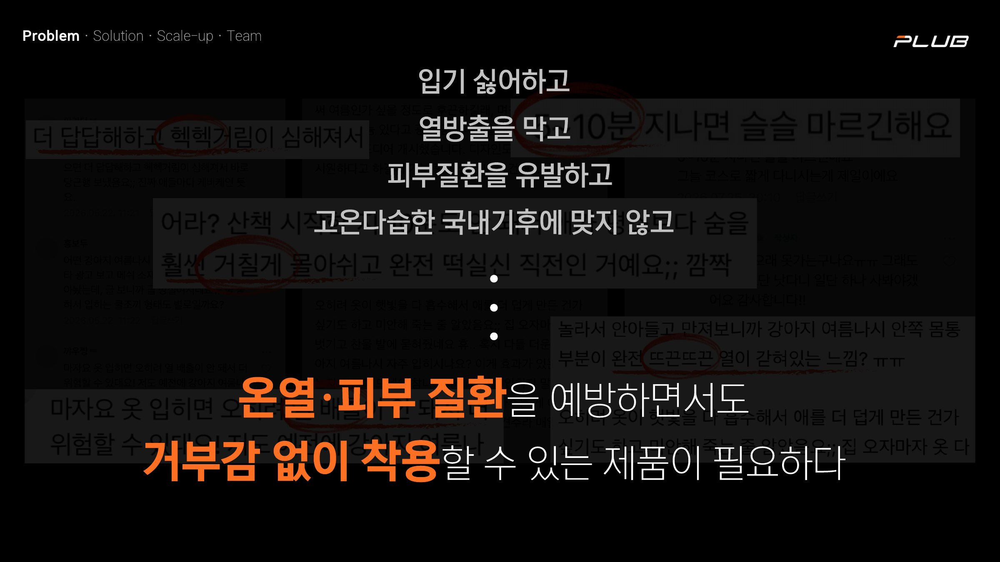
02 — SOLUTION
몸 전체를 감싸는 대신 대혈관이 지나는 목과 가슴에 모듈을 두어, 최소한의 피부 접촉으로 체온을 효율적으로 낮춥니다.
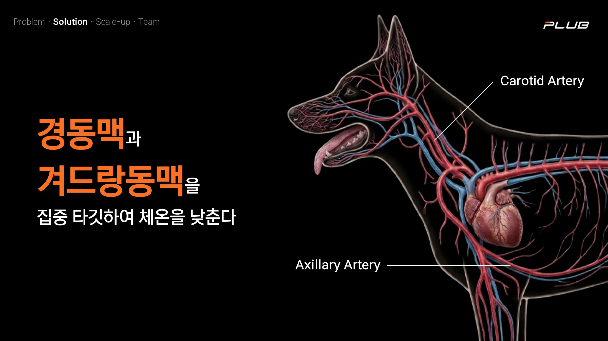
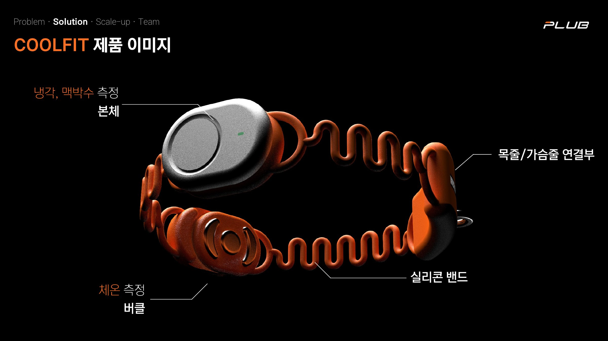
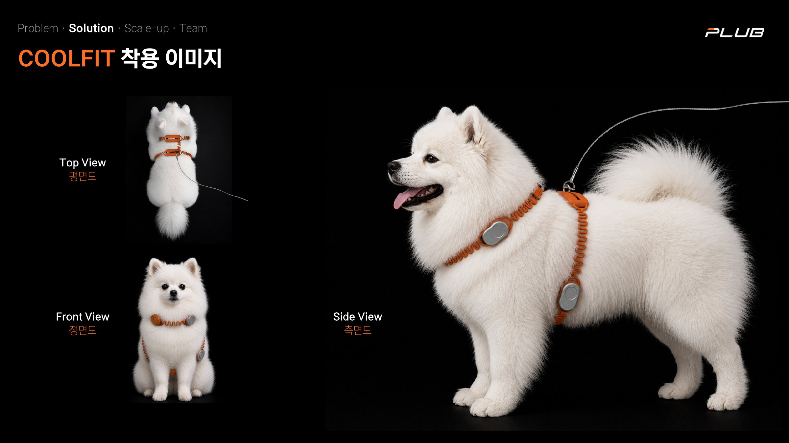
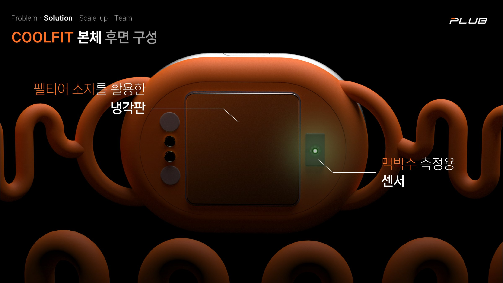
03 — STRUCTURE
본체는 펠티어 소자와 히트파이프, 냉각팬으로 식히고 맥박을 측정합니다. 버클은 체온을 재고, 포고핀으로 간편하게 충전합니다.
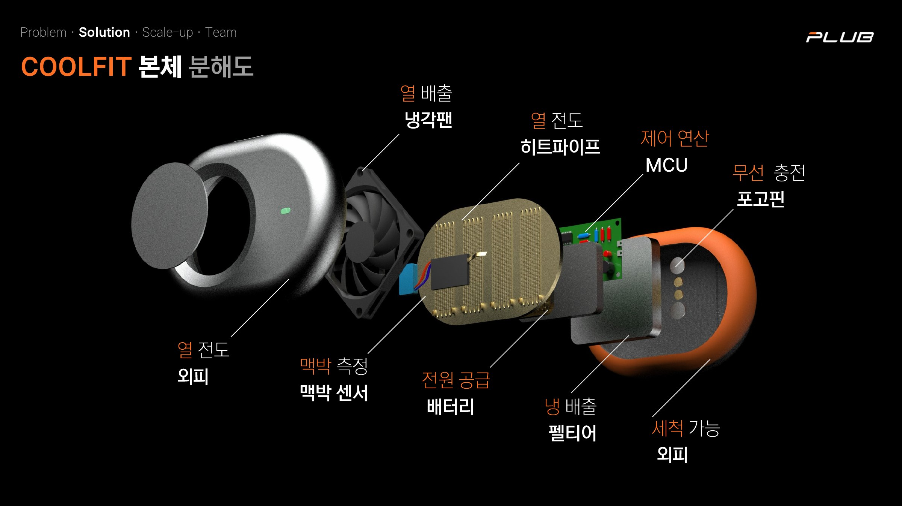
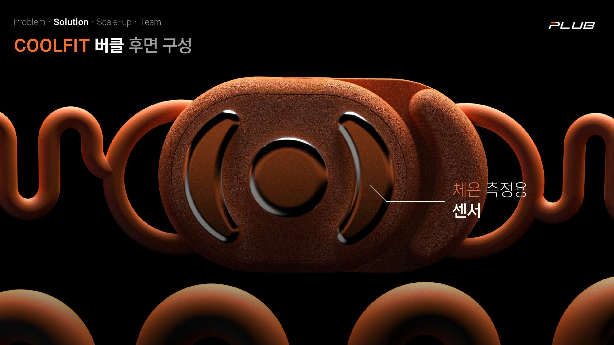
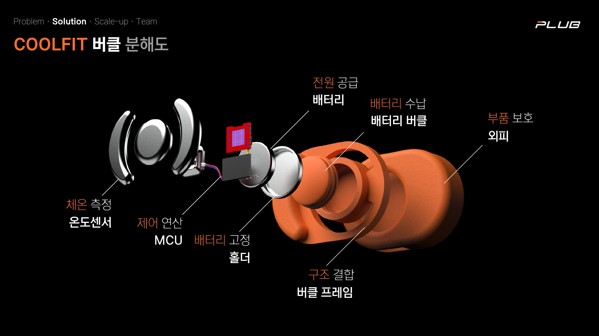
04 — APP
반려견의 체온과 심박수를 확인하고, 적정 체온에 맞춰 펠티어 온도를 자동으로 설정합니다. 저온화상 방지 안심 모드로 안전하게 사용할 수 있습니다.
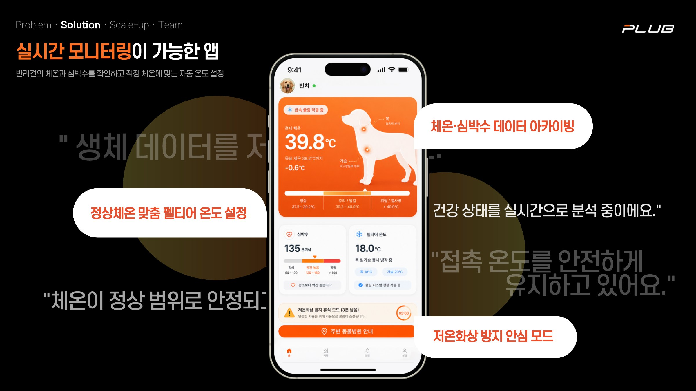
05 — DESIGN
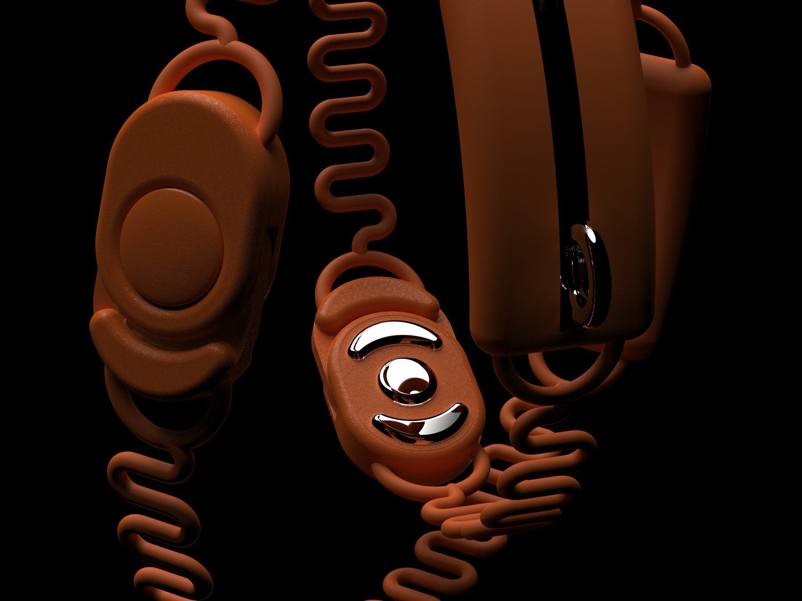
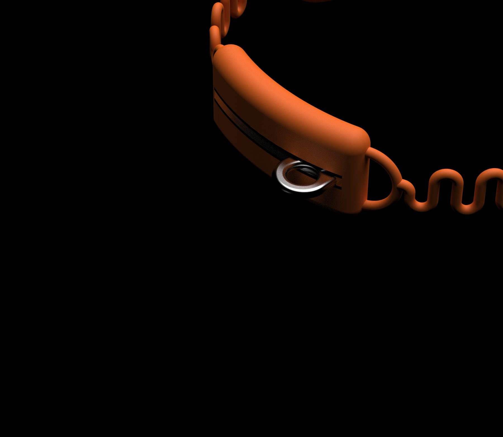
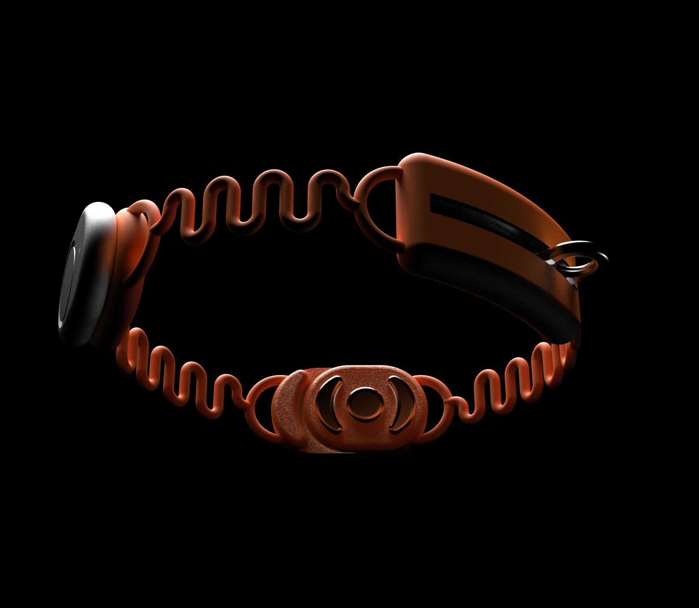
최소한의 피부 접촉으로 최대의 체온 관리
COOLFIT
반려인을 향한 진심을, 신뢰할 수 있는 기술로 완성합니다. 폭염 속에서도 반려견이 안전하게 세상을 탐험할 수 있도록.
필름 다시 보기